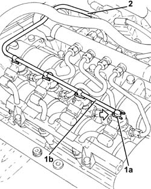

1060F52 PIPE TO RETURN MANIFOLD - R R
- Path
- Procedures > 10 ENGINE UNIT > 1060 DIESEL INJECTION SYSTEM > 1060F INJECTORS AND LINES > 1060F52 PIPE TO RETURN MANIFOLD - R R
- Kind
- repair procedure (removal / refitting; the operation number is the code)
- Applies to
- engines: 1.9 JTD 16V; all production periods
- Interactive page
- https://sloeber94.github.io/elrnDB-aGt/en/#/125001045
Applies to: engines: 1.9 JTD 16V; all production periods
 Removing
Removing
 Refitting
RefittingProceed with removal
- 1016A10 sound-proofing cover - r + r
1. Push clips (1a) by hand and disconnect the pipe from the injectors to the fuel recovery manifold (1b), injectors side and move it aside.
2. Disconnect the pipe from the injectors to the fuel recovery manifold, fuel recovery manifold side and remove it.

Applies to: engines: 1.9 JTD 16V; all production periods
Refitting
RemovingPlace the pipe from the injectors to the fuel recovery manifold in its housing and connect it to the fuel recovery manifold.
Connect the pipe from the injectors to the fuel recovery manifold to the injectors pushing it until the clips can be heard clicking into place.
Proceed with refitting
- 1016A10 sound-proofing cover - r + r
.